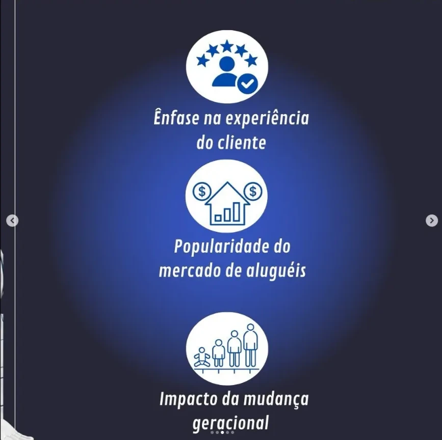
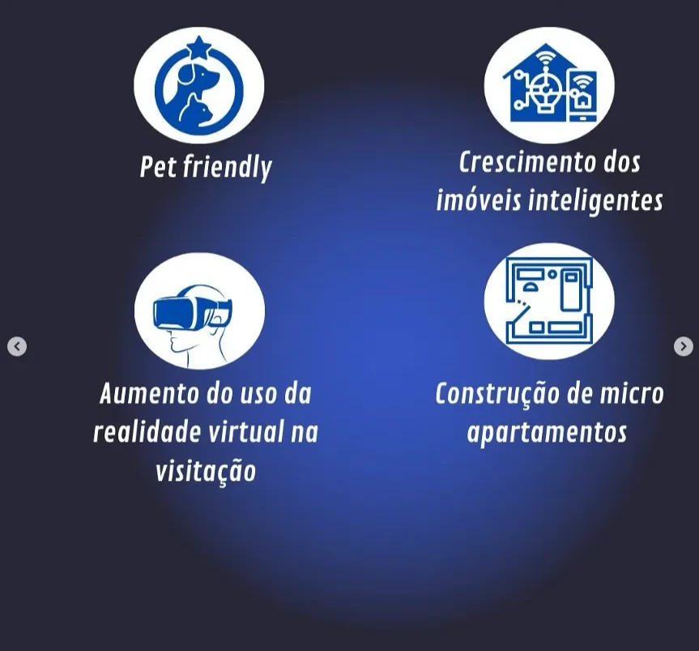

Voltar ao portfólio
Design gráfico · Social media
CRECI-PA
Conteúdo visual e peças digitais para comunicação institucional em redes sociais.
Galeria
Fotos do projeto



Design gráfico · Social media
Conteúdo visual e peças digitais para comunicação institucional em redes sociais.

